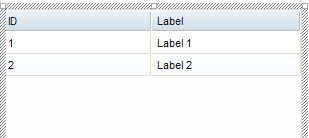
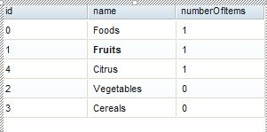
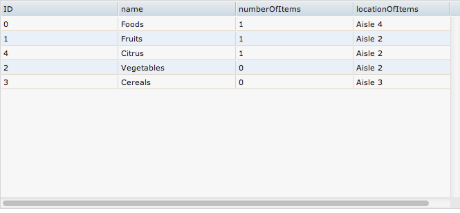
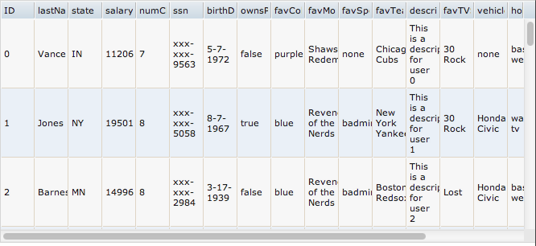
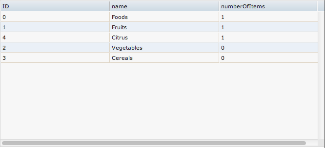

Widget Palette Dojo GridX Tests (Basic)
Comma separated data
Steps
- Choose New HTML File from the New menu
- Open the Dojo Controls folder in the Widget palette.
- Drag the GridX widget onto the canvas.
- SmartInput is displayed. Choose Comma separated data from the drop down list on the first panel of the wizard.
- Change the data in the text area to:
one, two, three
data 1, data 2, data 3
xxxx, yyy, zzz
111, 222, 3333
- Click Finish.
- The GridX should be updated with the data you entered. In addition, the grid's width should be 100%.
- Save and close the file.
- Reopen the file
- Click on the preview icon in the toolbar, this should open a new browser window and the grid should be displayed with the data entered
Expected results
- The GridX in page editor and preview should be displaying the data you just entered.
- You should see 3 columns with the headers one, two and three.
- You should see 3 rows of data, corresponding to the data you entered.
Smart Input (GridX Configuration Wizard)
Steps
- Choose New HTML File from the New menu
- Open the Dojo Controls folder in the Widget palette.
- Drag the GridX widget onto the canvas.
- SmartInput is displayed.
- Verify the SmartInput is a modal dialog containing a wizard.
- Verify the wizard contains three panels (one for data source set-up, one for column selection, and one for previewing the grid and resizing/reordering columns):
- Click the Next button 2 times and then the Back button two times to verify you can go to the end of the wizard and back (seeing the 3 steps along the way).
- Along the top of the dialog there should be a clickable heading for each step. Click on each heading and verify the corresponding wizard page is selected.
- On the first panel:
- Mouse down and hold on the icon in the button right corner of the text area. Drag to re-size the the text area.
- Click on the ? icon to display the help.
- Click on the ? icon to hide the help.
Expected results
- The user should see a modal dialog containing a wizard.
- The user should be able to navigate through the 3 steps of the wizard with Next/Back buttons or the clickable headings.
- On the first panel, the user should be able to re-size the text area and display/hide help.
Canceling the wizard
Steps
- Choose New HTML File from the New menu
- Open the Dojo Controls folder in the Widget palette.
- Drag the GridX widget onto the canvas.
- SmartInput is displayed. Choose Comma separated data from the drop down list
- Change the data in the text area to:
one, two, three
data 1, <b>data 2</b>, data 3
xxxx, yyy, zzz
111, 222, 3333
- NOTE: The UI should not change despite the presence of HTML tags. Unlike DataGrid, GridX does not support specifying the use of Plan Text vs. HTML Markup.
- Click the Cancel button.
- The GridX should be be displayed with the default data, not the data you entered.
- Save and close the file.
- Reopen the file
- Click on the preview icon in the toolbar, this should open a new browser window and the grid should be displayed with the default data.
Expected results
- The GridX in page editor and preview should be displaying the default data.

Data file from workspace
Steps
- Choose New HTML File from the New menu
- Open the Dojo Controls folder in the Widget palette.
- Drag the GridX widget onto the canvas.
- SmartInput is displayed. Choose Data file from workspace from the drop down list on the first panel of the wizard.
- Click on the folder icon.
- The select a source dialog will be displayed, navigate to the samples/sample_data folder and then select the htmlSample.json file. Click the OK button
- The text area should now display the text samples/sample_data/htmlSample.json Unlike DataGrid, radio buttons to specify plain text or HTML markup should not
be displayed.
- Click the Finish button on the wizard.
- The GridX should be updated with the data from the htmlSample file. Notice that the data is displayed with HTML markup rendered (e.g., Fruits is made bold).
- Save and close the file.
- Reopen the file
- Click on the preview icon in the toolbar, this should open a new browser window and the grid should be displayed with the data from the file.
Expected results
- The GridX in page editor and preview should be displaying the data from the file.

Data from URL (JSONP)
Steps
- Continuing from the test case above, open the HTML File from the Data from workspace test case.
- Double click on the GridX Widget in the design view to display the smart input.
- SmartInput is displayed. Choose Data from URL (JSONP) from the drop down list on the first panel.
- In the text area enter the following URL: http://maqettaservice.appspot.com/sampleservice
- Click the Finish button on the wizard.
- The GridX should be updated with the data from the service. Notice that the data is displayed with HTML tags rendered (for example Fruits).
- Save and close the file.
- Reopen the file
- Click on the preview icon in the toolbar, this should open a new browser window and the grid should be displayed with the data from the service.
Expected results
- The GridX in page editor and preview should be displaying the data from the file.
Comma separated data (with empty cells)
Steps
- Choose New HTML File from the New menu
- Open the Dojo Controls folder in the Widget palette.
- Drag the GridX widget onto the canvas.
- SmartInput is displayed. Choose Comma separated data from the drop down list on the first panel of the wizard.
- Change the data in the text area to the following (note empty cells in the 2nd column of the first two rows):
Date de début,Date de fin,Code UT,Intitulé UT
03/03/2012,,UT3,Unité de Travail Trois
02/02/2011,,UT2,Unité de Travail Deux
01/01/2010,31/12/2012,UT1,Unité de Travail Un
- Click Finish.
- The GridX should be updated with the data you entered to show 4 columns of data.

- Double-click the GridX to reopen smart input. Ensure that the data looks the same as when you pasted it in originally. In particular, ensure the
2nd column is present and the empty cells in the first two rows are reflected.
- Save and close the file.
- Reopen the file
- Click on the preview icon in the toolbar, this should open a new browser window and the grid should be displayed with the data entered
Expected results
- The GridX in page editor and preview should be displaying the data you just enter.
- You should see 4 columns with the headers specified in your data.
- You should see 3 rows of data, corresponding to the data you entered.
- Reopening smart input should show exactly the same data as what you pasted in originally.
CSV Data file from workspace
Steps
- Choose New HTML File from the New menu
- Open the Dojo Controls folder in the Widget palette.
- Drag the GridX widget onto the canvas.
- SmartInput is displayed. Choose Data file from workspace from the drop down list on the first panel of the wizard.
- Click on the folder icon.
- The select a source dialog will be displayed, navigate to the samples/sample_data folder and then select the sample.csv file. Click the OK button
- The text area should now display the text samples/sample_data/sample.csv
- Click the Finish button on the wizard.
- The GridX should be updated with the data from the sample.csv file.
- Save and close the file.
- Reopen the file
- Click on the preview icon in the toolbar, this should open a new browser window and the grid should be displayed with the data from the file.
Expected results
- The GridX in page editor and preview should be displaying the data from the file.

Switching Between File & Data Source Types
Steps
- Continuing with the file from the previous section, double-click on the GridX to bring up smart input.
- SmartInput is displayed. The Data file from workspace option should still be selected and the text field should contain
samples/sample_data/sample.csv.
- Click on the folder icon.
- The select a source dialog will be displayed, navigate to the samples/sample_data folder and then select the sampleManyColumns.json file. Click the OK button
- Click the Finish button on the wizard.
- The GridX should be updated with the data from the sampleManyColumns.json file.

- Double-click on the GridX to bring up smart input.
- SmartInput is displayed. The Data file from workspace option should still be selected and the text field should contain
samples/sample_data/sampleManyColumns.json.
- Click on the folder icon.
- The select a source dialog will be displayed, navigate to the samples/sample_data folder and then select the sample.json file. Click the OK button
- Click the Finish button on the wizard.
- The GridX should be updated with the data from the sample.json file.

- Double-click on the GridX to bring up smart input.
- SmartInput is displayed. The Data file from workspace option should still be selected and the text field should contain
samples/sample_data/sample.json.
- Choose Comma separated data from the drop down list on the first panel of the wizard.
- The text area should be empty. Enter the following:
one, two, three
data 1, data 2, data 3
xxxx, yyy, zzz
111, 222, 3333
- Click Finish.
- The GridX should be updated with the data you entered.
- Save and close the file.
- Reopen the file
- Click on the preview icon in the toolbar, this should open a new browser window and the grid should be displayed with the data from the file.
Expected results
- See above.